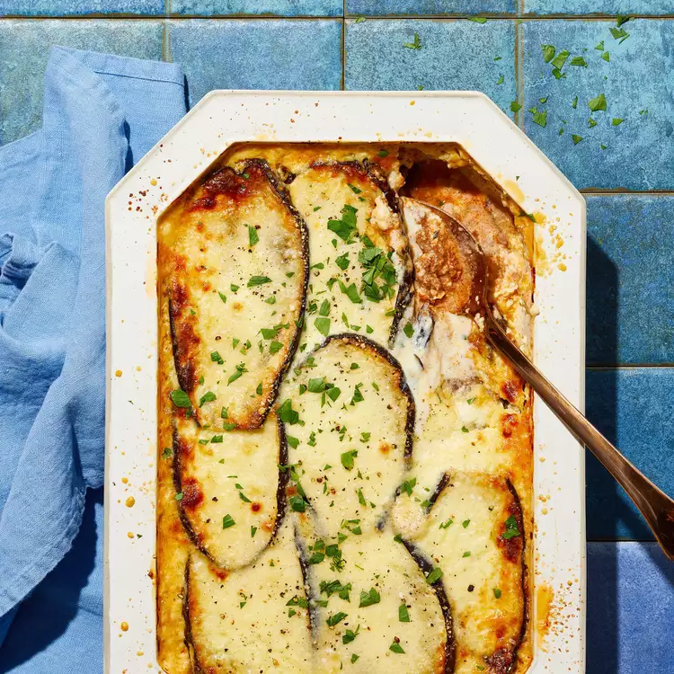

Authentic Greek Moussaka

the authentic greek moussaka
Ingredients
- Eggplants
- Milk
- Butter
- Egg yolks
- Onions & garlic
- Olive oil
- Ground beef
- Spices
- Tomato sauce
- Parmesan cheese
Here's a very brief overview of what you can expect when you make homemade moussaka:
- Sprinkle eggplant slices with salt and place in a colander set in the sink or over a plate. Let sit for 30 minutes to 1 hour so the salt can draw out any bitterness.
- Meanwhile, make bechamel sauce. Heat milk in a saucepan almost to a boil. Melt butter in a skillet over medium heat. Whisk in flour until a smooth paste forms. Lower heat and gradually pour in hot milk, whisking constantly until bechamel sauce thickens. Season with salt. Remove from heat and allow to cool slightly.
- Rinse eggplant slices under cold running water. Squeeze out liquid and pat dry with paper towels. Whisk egg yolks into the cooled bechamel.
- Heat 3 tablespoons olive oil in a large skillet and cook eggplant slices in batches until each side is lightly browned, about 3 minutes per side. Drain on a large plate lined with paper towels.
- Preheat the oven to 375 degrees F (190 degrees C). Grease a 9x13-inch baking dish with olive oil.
- Heat remaining 4 tablespoons olive oil in a large skillet over low heat. Cook grated onion until soft, about 4 minutes. Add garlic and cook for 1 minute. Increase heat to medium-high and add ground beef. Cook and stir until browned and crumbly, about 5 minutes. Season with allspice, sugar, cinnamon, salt, and pepper.
- Stir in tomato sauce and bring to a simmer. Cook until all excess liquid has evaporated and mixture appears dry, 15 to 20 minutes. Stir in parsley and remove from heat. Allow to cool slightly, then stir in the egg white.
- Arrange a layer of eggplant in the prepared baking dish. Cover eggplant with all of the beef mixture and sprinkle with 1/3 of the Parmesan cheese. Cover with remaining eggplant and sprinkle another 1/3 of Parmesan cheese on top. Pour bechamel sauce over the top and sprinkle with remaining Parmesan cheese.
- Bake in the preheated oven until the top of the moussaka is set and golden, 45 minutes to 1 hour. Remove from oven and let rest at room temperature for 10 to 15 minutes before slicing and serving.